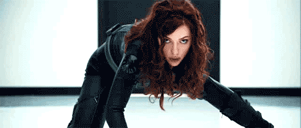
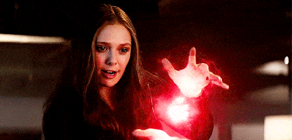

Para escolher sua personagem clique no botão abaixo de cada vingadora, assim você terá um pequeno spoiler da tragetória de cada uma. Depois disso, escolha sua Vingadora preferida e clique em Inicie o seu Quiz e divirta-se!!!

Capitã Marvel, parte do exército de elite dos Kree,
uma raça alienígena, encontra-se no meio de uma batalha
entre seu povo e os Skrulls. Ao tentar impedir uma invasão
de larga escala na Terra, em 1995, ela tem memórias recorrentes
de uma outra vida, como Carol Danvers, agente da Força Aérea
norte-americana. Com a ajuda de Nick Fury, Capitã Marvel precisa
descobrir os segredos de seu passado e pôr um fim ao conflito
intergalático com os Skrulls.
Fonte de poder: Tesseract.

A Viúva Negra não é exatamente uma
supersoldado como o Capitão América,
mas é facilmente uma das “pessoas comuns”
mais fortes e resistentes do planeta.
Ela está no auge humano nas capacidades
físicas, conseguindo até mesmo lidar com
os alienígenas da invasão Chitauri no
primeiro filme dos Vingadores.
Habilidades: Mestre em artes
marciais.
Wanda é tão poderosa que é capaz de ressuscitar os mortos,
como fez com seu irmão Pietro e Magnum; pode apagar seres da
existência ou criar seres a partir do nada - como fez com seus
respectivos filhos; além de ser capaz de roubar pedaços da alma
de Mephisto, o lorde supremo do submundo.
Poder: Alterar a realidade e
controlar várias formas de energia mística..